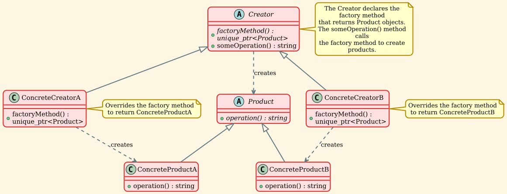

Factory Method Pattern¶
Overview¶
Factory Method is a creational design pattern that provides an interface for creating objects in a superclass, but allows subclasses to alter the type of objects that will be created.
Intent¶
The Factory Method pattern defines an interface for creating an object, but lets subclasses decide which class to instantiate. Factory Method lets a class defer instantiation to subclasses.
Problem¶
Imagine that you're creating a logistics management application. The first version of your app can only handle transportation by trucks, so the bulk of your code lives inside the Truck class.
After a while, your app becomes quite popular. Each day you receive dozens of requests from sea transportation companies to incorporate sea logistics into the app.
Great news, right? But how about the code? At present, most of your code is coupled to the Truck class. Adding Ship into the app would require making changes to the entire codebase. Moreover, if later you decide to add another type of transportation to the app, you will probably need to make all of these changes again.
As a result, you will end up with pretty nasty code, riddled with conditionals that switch the app's behavior depending on the class of transportation objects.
Solution¶
The Factory Method pattern suggests that you replace direct object construction calls (using the new operator) with calls to a special factory method. Don't worry: the objects are still created via the new operator, but it's being called from within the factory method. Objects returned by a factory method are often referred to as "products."
At first glance, this change may look pointless: we just moved the constructor call from one part of the program to another. However, consider this: now you can override the factory method in a subclass and change the class of products being created by the method.
There's a slight limitation though: subclasses may return different types of products only if these products have a common base class or interface. Also, the factory method in the base class should have its return type declared as this interface.
Structure¶
UML Diagram¶

Participants¶
-
Product (
Product)- Defines the interface of objects the factory method creates
- This is the abstract product type
-
ConcreteProduct (
ConcreteProductA,ConcreteProductB)- Implements the Product interface
- These are the actual products created by the concrete creators
-
Creator (
Creator)- Declares the factory method, which returns an object of type Product
- May also define a default implementation of the factory method that returns a default ConcreteProduct object
- May call the factory method to create a Product object
- Contains core business logic that relies on Product objects
-
ConcreteCreator (
ConcreteCreatorA,ConcreteCreatorB)- Overrides the factory method to return an instance of a ConcreteProduct
- Each concrete creator typically corresponds to a specific product variant
Implementation¶
Product Interface¶
The Product interface declares the operations that all concrete products must implement.
Creator Interface¶
The Creator class declares the factory method that returns new product objects. The key point is that the Creator's primary responsibility is not creating products—it usually contains core business logic that relies on Product objects returned by the factory method.
Demo Application¶
The main application demonstrates how the Factory Method pattern works in practice.
Output:
This output shows how the same client code works with different creators, each producing their own product type without the client knowing the concrete classes involved.
Key Concepts¶
Factory Method vs Direct Instantiation¶
Without Factory Method:
With Factory Method:
Core Principles¶
- Deferred Instantiation: The Creator doesn't know which concrete product will be created until runtime
- Subclass Decision: Subclasses decide which class to instantiate
- Interface Programming: Both Creator and Client code work with abstract interfaces
- Parallel Hierarchies: Product hierarchy and Creator hierarchy evolve together
Applicability¶
Use the Factory Method pattern when:
1. Unknown Dependencies at Compile Time¶
When you don't know beforehand the exact types and dependencies of the objects your code should work with.
Example: A document editor that can work with different document types (Word, PDF, HTML), but you don't know which types will be added in the future.
2. Library/Framework Extension¶
When you want to provide users of your library or framework with a way to extend its internal components.
Example: A game engine where users can create custom enemy types by extending the base Enemy class.
3. Resource Management¶
When you want to save system resources by reusing existing objects instead of rebuilding them each time.
Example: Connection pools, object pools, or caching mechanisms.
4. Product Family Management¶
When you need to centralize product creation logic and make it easier to maintain and extend.
Example: Different UI themes or skins where each theme creates its own set of UI components.
Advantages¶
1. Single Responsibility Principle¶
✅ You can move the product creation code into one place in the program, making the code easier to support.
2. Open/Closed Principle¶
✅ You can introduce new types of products into the program without breaking existing client code.
3. Loose Coupling¶
✅ The code works with the abstract interface rather than concrete classes, reducing dependencies.
4. Flexibility¶
✅ Provides hooks for subclasses, allowing them to provide extended versions of objects.
5. Eliminates Class Binding¶
✅ The code only deals with the Product interface, making it independent of concrete product classes.
Disadvantages¶
1. Code Complexity¶
❌ The code may become more complicated since you need to introduce many new subclasses to implement the pattern. The best case scenario is when you're introducing the pattern into an existing hierarchy of creator classes.
2. Parallel Hierarchies¶
❌ Requires maintaining parallel class hierarchies (Product hierarchy and Creator hierarchy), which can increase maintenance burden.
3. Overhead¶
❌ May introduce unnecessary complexity for simple cases where direct instantiation would suffice.
Real-World Examples¶
Example 1: Cross-Platform UI Elements¶
Example 2: Document Processing¶
Example 3: Logistics System¶
Related Patterns¶
Abstract Factory¶
Relationship: Abstract Factory is often implemented with Factory Methods. An Abstract Factory is usually composed of a set of Factory Methods.
Difference: Abstract Factory creates families of related objects, while Factory Method creates one type of object.
Template Method¶
Relationship: Factory Method is a specialization of Template Method. A Factory Method may serve as a step in a large Template Method.
Difference: Template Method defines the skeleton of an algorithm, while Factory Method focuses on object creation.
Prototype¶
Relationship: Designs that use Factory Method can evolve toward using Prototype, which is less rigid.
Difference: Prototype creates objects by copying a prototypical instance, while Factory Method creates objects through inheritance.
Builder¶
Relationship: Both are creational patterns focused on object construction.
Difference: Builder focuses on constructing complex objects step by step, while Factory Method focuses on creating objects through an interface.
Common Mistakes¶
1. Overusing the Pattern¶
❌ Wrong: Using Factory Method for every object creation, even simple ones.
✅ Right: Use it when you need flexibility in object creation or expect to extend the product types.
2. Breaking the Abstraction¶
❌ Wrong:
✅ Right:
3. Forgetting the Business Logic¶
❌ Wrong: Making the Creator just a factory with no business logic.
✅ Right: The Creator should contain business logic that uses the products created by the factory method.
Best Practices¶
1. Use Smart Pointers¶
2. Make Factory Methods Protected¶
When the factory method is only used internally by the Creator class:
3. Provide Default Implementation¶
4. Use Const Correctness¶
5. Document the Intent¶
Always document what the factory method creates and why subclasses might want to override it.
Summary¶
The Factory Method pattern is a powerful creational design pattern that:
- ✅ Provides an interface for creating objects in a superclass
- ✅ Lets subclasses alter the type of objects that will be created
- ✅ Promotes loose coupling by eliminating direct class dependencies
- ✅ Follows the Open/Closed Principle
- ✅ Follows the Single Responsibility Principle
- ✅ Makes code more flexible and extensible
Use it when you need flexibility in object creation and want to provide extension points for future product types, but be mindful of the added complexity it introduces.